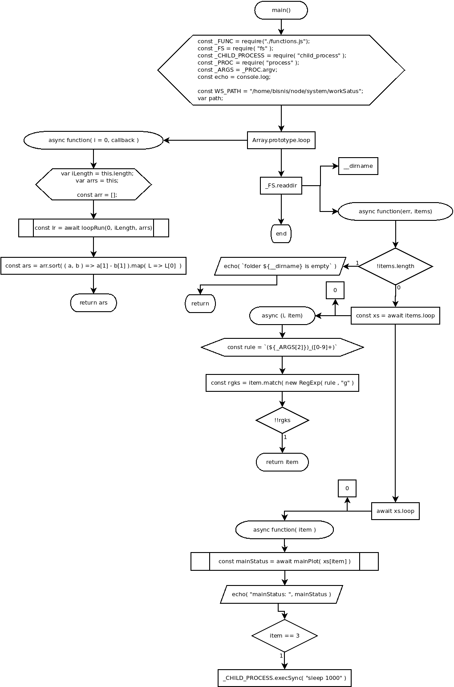

main()
Flowchart

Code
'use strick'
function main(){
const _FUNC = require("./functions.js");
const _FS = require( "fs" );
const _CHILD_PROCESS = require( "child_process" );
const _PROC = require( "process" );
const _ARGS = _PROC.argv;
const echo = console.log;
const _WS_PATH = "/home/bisnis/node/system/workStatus";
var path;
Array.prototype.loop = async function( i = 0, callback ){
var iLength = this.length;
var arrs = this;
const arr = [];
async function loopRun( i, iLength, arrs ){
const cb = await callback( i, arrs[i] );
if( cb ){
arr.push( [cb, parseInt(cb.split("_").reverse()[0]) ] );
}
i++;
if( i < iLength ){
return loopRun( i, iLength, arrs );
}
return i;
}
const lr = await loopRun(0, iLength, arrs);
return arr.sort( ( a, b ) => a[1] - b[1] ).map( L => L[0] );
}
async function handlingContent( context ){
const chPromise = await context.contentHandler()
.then(
async ( resolved )=>{ return resolved },
async ( rejected )=>{ return rejected }
);
echo("retSwitcher: ", !!retSwitcher);
const crs = await chPromise.received( retSwitcher );
return crs;
}
async function mainPlot( sourcePath ){
const bb = new _FUNC.botBlog( sourcePath );
echo( "sourcePath: ", sourcePath );
var colorRet = "\x1b[33m"; //yellow
var colorErr = "\x1b[31m"; //red
var colorTitle = "\x1b[35m"
path = sourcePath;
echo( colorTitle, "\x1b[4m", "BLOGGER BOT COMMENCES MISSION", "\x1b[0m\n");
echo( `# read workStatus in ${_WS_PATH}` );
const retClearSys = await bb.clearSys( path ).then( async resolved => { return resolved } );
echo( retClearSys.returnMessage );
echo( colorRet, `# retClearSys: ${!!retClearSys}`, "\x1b[0m" );
if( !retClearSys ){
echo( colorErr, "# false value is not allowed", "\x1b[0m" );
return !retClearSys;
}
const retWorkStatus = await bb.workStatus().then( async (resolved)=>{ return resolved; } );
echo( colorRet, `# retWorkStatus: ${!!retWorkStatus}`, "\x1b[0m" );
echo( colorRet, "# retWorkStatus.res: ", retWorkStatus.res, "\x1b[0m" );
await bb.setWorkStatus( "on-going" );
echo( "retWorkStatus.res: ", retWorkStatus.res );
const retSwitcher = await bb.switcher( retWorkStatus.res );
echo( "retSwitcher:", retSwitcher );
await handlingContent( bb );
return true;
}
_FS.readdir( __dirname , async function( err, items ){
if( !items.length ){
echo( `folder ${__dirname} is empty` );
return;
}
const xs = await items.loop(0, async (i, item)=>{
const rule = `(${_ARGS[2]})_([0-9]+)`;
const rgks = item.match( new RegExp( rule , "g" ) );
if( !!rgks ) {
return item;
}
} );
await xs.loop( 0, async function( item ){
const mainStatus = await mainPlot( xs[item] );
echo( "mainStatus: ", mainStatus );
if( item == 3 ){
_CHILD_PROCESS.execSync( "sleep 1000" );
};
} );
} );
}
main();
main();
Refers to:
-
async function loopRun( 0, iLength, arrs )
-
async function mainPlot( sourcePath )